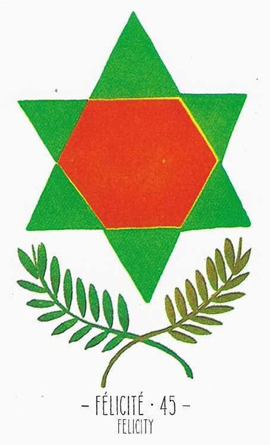

45
행복
Felicity긍정

그림 읽기
중앙의 육각형 별과 올리브 가지. 별은 신비한 힘을, 올리브 가지는 평화와 번영을 상징하며 어떤 상황에서도 나쁜 기운을 중화합니다.
행복소원성취목표달성희망중화
핵심 내용
- 목표달성·행복·성취·희망
- 어느 때보다 행복한 시기
- 전체 카드 중 가장 기운이 좋은 카드
- 부정 카드를 중화시키는 가장 좋은 카드
- 6각형 다윗의 별 = 창조의 별
- 수비학 3+3 — 정신의 수, 완벽에 가까운 수
주요 메시지
창조와 달성 — 행복·희망·성취·자아실현, 가장 긍정적인 카드
보호와 행운 — 부정적 상황에서도 긍정적 변화를 이끌어냄
실생활 적용
부정적 상황에서의 보호와 긍정 에너지 신뢰
내적 힘과 외적 지원을 통한 어려움 극복
학습 노트
다른 카드와의 조합에 따라 불행에서 벗어나는 힘을 제공하고, 새 시작·전환점에서 강력한 지원을 암시합니다.
조합 메모

47번+45번 = 비참함에서 자유로워짐, 고생했던 일이 풀림
14번+45번 = 도전과 열정이 관계에 긴장감